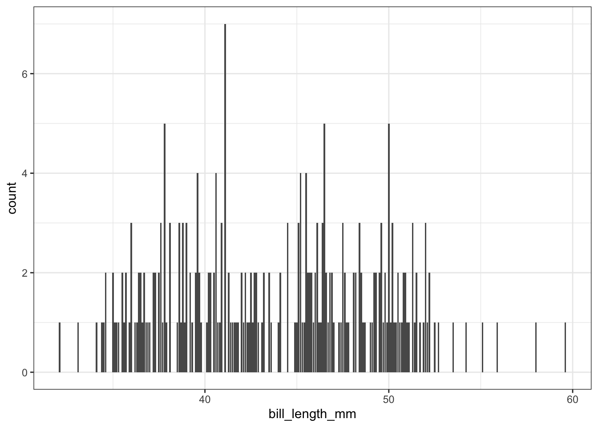
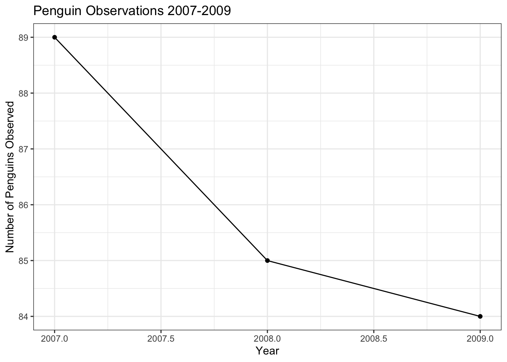

Code
library(tidyverse)
library(tidymodels)
library(kableExtra)
library(palmerpenguins)
options(kable_styling_bootstrap_options = c("hover", "striped"))
theme_set(theme_bw())ggplot()library(tidyverse)
library(tidymodels)
library(kableExtra)
library(palmerpenguins)
options(kable_styling_bootstrap_options = c("hover", "striped"))
theme_set(theme_bw())Data visualization is an extremely important part of any analysis. As a researcher or analyst, data visualization will likely bookend your work, serving as a reservoir for idea and hypothesis generation at the beginning of a project as well as becoming a vehicle for conveying important takeaways as you summarize and disseminate your results upon completion.
We’ll make use of a relatively famous data set on penguins from the Palmer Archipelago, in Antarctica. This data was collected by Dr. Kristen Gorman. Both the {tidymodels} and {palmerpenguins} packages have versions of the penguins data frame, but we’ll want to use the version from {palmerpenguins}. For this reason, we’ll explicitly store that version of the data set into our environment.
penguins <- palmerpenguins::penguins
penguins %>%
head() %>%
kable() %>%
kable_styling()| species | island | bill_length_mm | bill_depth_mm | flipper_length_mm | body_mass_g | sex | year |
|---|---|---|---|---|---|---|---|
| Adelie | Torgersen | 39.1 | 18.7 | 181 | 3750 | male | 2007 |
| Adelie | Torgersen | 39.5 | 17.4 | 186 | 3800 | female | 2007 |
| Adelie | Torgersen | 40.3 | 18.0 | 195 | 3250 | female | 2007 |
| Adelie | Torgersen | NA | NA | NA | NA | NA | 2007 |
| Adelie | Torgersen | 36.7 | 19.3 | 193 | 3450 | female | 2007 |
| Adelie | Torgersen | 39.3 | 20.6 | 190 | 3650 | male | 2007 |
Remember that we need an unbiased set of observations in order to be able to test our models. We need to be “blind” to those observations in order for our assessment to be truly unbiased. This means that we should only be learning from our training data – this includes any initial exploratory data analysis.
We’ll split into training and validation data below.
set.seed(300)
data_splits <- initial_split(penguins, prop = 0.75)
train <- training(data_splits)
test <- testing(data_splits)
train %>%
head() %>%
kable() %>%
kable_styling()| species | island | bill_length_mm | bill_depth_mm | flipper_length_mm | body_mass_g | sex | year |
|---|---|---|---|---|---|---|---|
| Adelie | Torgersen | 37.2 | 19.4 | 184 | 3900 | male | 2008 |
| Adelie | Biscoe | 41.6 | 18.0 | 192 | 3950 | male | 2008 |
| Gentoo | Biscoe | 50.0 | 15.2 | 218 | 5700 | male | 2007 |
| Chinstrap | Dream | 46.5 | 17.9 | 192 | 3500 | female | 2007 |
| Adelie | Dream | 36.5 | 18.0 | 182 | 3150 | female | 2007 |
| Chinstrap | Dream | 45.7 | 17.0 | 195 | 3650 | female | 2009 |
Notice that in creating our training/testing split, our observations were randomly shuffled and then put into the training and testing sets. We’ll work with our training data from here on.
Let’s move on to plotting!
Data visualization is an extremely important part of any analysis. As a researcher or analyst, data visualization will likely bookend your work, serving as a reservoir for idea and hypothesis generation at the beginning of a project as well as becoming a vehicle for conveying important takeaways as you summarize and disseminate your results upon completion.
ggplot()In R, we have access to an extremely popular an easy-to-use plotting library, called {ggplot2}. The main philosophy behind {ggplot2} is that data visualization should follow a layered grammar of graphics. The grammar of graphics is a notion first introduced by Leland Wilkinson in 2006, and the layering functionality is a convenient implementation in {ggplot2}.
Recall from our introduction to the tidyverse that we can read the pipe below as saying “start with the train dataset and then create a ggplot()”.
train %>%
ggplot()The function ggplot() calls (or initializes) a plot object but won’t actually create anything interesting by itself – just an empty rectangle. Next, we need to add a geometry layer to our plot and pass it the appropriate aesthetics. The geometry layer determines the type of plot we will build and the aesthetics pass the information required from our dataset to construct the plot. You can find some of the most common geometry layers (or geoms) and their [minimum] required aesthetics below.
geom_point() will create a scatterplot, requiring x and y aesthetics.geom_line() will create a linegraph, requiring x and y aesthetics.geom_boxplot() will create a boxplot, requiring an x aesthetic.geom_histogram() will create a histogram, requiring an x aesthetic.geom_density() will create a density, requiring an x aesthetic.geom_bar() will create a bargraph, requiring an x aesthetic.Let’s create a scatterplot between bill_length_mm and bill_depth_mm using the geom_point() layer.
#Add the code here...The ggplot() function assumes by default that the first and second argument in aes() correspond to the x- and y-variables, so you may also write aes(bill_length_mm, bill_depth_mm) to save some typing. Each layer in a ggplot is added to the existing plot object using a + sign, which you can read as “with”. This allows us to combine and customize plots quite easily, as you will see further on in this notebook.
Additional aesthetics can typically be added in order to better visualize the data or to add more information into our plot. For example, we might wonder whether the relationship between bill length and bill depth is different among the various penguin species. We can color the points in the scatter plot by adding color = species to the aes() function. You might try size = species as an aesthetic as well.
#Experiment here...Often times, you may want to preprocess the data set before feeding it into a plot object. For example, let’s say that we wanted to see if there was any trend in the number of penguin observations each year. This information does not already appear as a column in the dataset, so we will need to use the count() function to create it first.
#Create the plot here...In the visualization above, two layers were added- a scatter plot which created the points, and a line graph which created the lines that connect the points. Notice that all we needed to do was “add” the layers with the + symbol.
If we wanted to save a bit of typing, because both plotting layers map the same aesthetics to the same types of objects, we can pass aes(year, n)) to once to ggplot() rather than to the individual plot layers.
Data visualizations have become commonplace in our society as data collection has increased. There are many types of visualizations available to us- scatter plots, box plots, mosaic plots, and word clouds, just to name a few. How can we decide what type of visualization is appropriate for a dataset? The answer depends largely on the type of data that you are working with. Recall that a numerical variable is a variable which is obtained through measurement, and for which comparing values of the variable makes sense (think – would an average of these values be meaningful?). Examples of numerical variables include heights, distances, temperatures, budget sizes, etc. A categorical variable is a variable which sorts values into “bins”. Examples of categorical variables include a person’s sex, the answer to a yes or no question, a student’s grade level, etc. Whether to consider a variable to be numerical or categorical is not always obvious and may depend upon the context of the dataset.
A single numerical variable can be visualized using a histogram, a box plot, or a violin plot. Let’s consider a the bill length bill_length_mm of Gentoo penguins. A histogram takes the various bill lengths of the penguins (between 40.9 mm and 59.6 mm in this case), and groups them together into bins of equal length. Then, a bar is drawn over each bin whose height reflects the number (or proportion) of penguins whose bill length lies within the bin. The bins = argument in the geom_histogram() layer controls the number of bins that are created. Notice that the bins argument falls outside of the aes() parentheses because its value is not being inherited from a column in our dataset.
#Add your plot here...Often, we would like to see how close a histogram is to a Normal distribution (the bell-shaped curve). To do this, we will add a stat_function layer which draws a Normal curve with mean and standard deviation equal to the mean and standard deviation of the data set. In this case, we will let the y-coordinate be ..density.. which measures the proportion of penguins which lie in each bin, rather than the number of penguins. The arguments of the stat_function() layer are fun =, which tells R what type of distribution to draw and args =, which provides R with the mean and standard deviation of the distribution.
train %>%
filter(!is.na(bill_length_mm),
species == "Gentoo") %>%
ggplot() +
geom_histogram(aes(x = bill_length_mm, y = ..density..), bins = 20) +
stat_function(fun = dnorm,
args = list(mean = train %>%
filter(!is.na(bill_length_mm),
species == "Gentoo") %>%
pull(bill_length_mm) %>%
mean(),
sd = train %>%
filter(!is.na(bill_length_mm),
species == "Gentoo") %>%
pull(bill_length_mm) %>%
sd()),
color = "red")A box plot is helpful when your goal is to visualize the “center” of the data (using the median) and to get a sense of how spread out the data is.
#Create your boxplotThe line in the interior of the white box corresponds to the median value of the bill length variable, which is 47.3 mm in this example. The length of the white box is the interquartile range. All values between the 25th and 75 percentiles of the data lie in this range. The lines (“whiskers”) coming from the interquartile range extend out to either i) the minimum or maximum value in the data, or ii) to 1.5 times the interquartile range. Any values that extend beyond 1.5 interquartile ranges away from the median are marked with dots.
You’ve probably already noticed some advantages to the ggplot() framework. Creating new types of plots are easy because the syntax is consistent. Switching from a histogram to a box plot is as simple as changing the type of layer being added to the plot!
In order to visualize a single categorical variable, a bar plot is appropriate. The bar plot counts the number of occurrences of each level of the categorical variable. For example, we can explore whether there are similar numbers of penguins of each species contained within the dataset:
#Build a barplot of the species variable...To make a more visually appealing bar plot, we can have the bars be different colors using the fill = aesthetic. I usually add a show.legend = FALSE argument to the geom_bar() layer so that we don’t have redundant information in the plot. (You can try it both ways to see the difference).
#Try including fill color here...If you would like to visualize the relationship between two numerical variables, you should use a scatter plot. For example, we could consider the relationship between the bill length (bill_length_mm) and bill depth (bill_depth_mm) of the penguins in the dataset:
#Create your scatterplot...Each point on the scatter plot corresponds to a single penguin. The x- and y- coordinate of each point is equal to the bill length and bill depth of the corresponding penguin.
To describe the relationship between a categorical and a numerical variable, use side-by-side box plots. Does the bill length of a penguin change based on its species? Recall from earlier that, at a minimum, a boxplot requires an x aesthetic. Here we will pass it both an x and y aesthetic, where x is a grouping variable (categorical) and y is the numerical variable we are interested in visualizing across the groups.
#Build your side-by-side boxplots here...We can also use violin plots to visualize the relationship. Violin plots are sort of a mash-up between a box plot and a histogram, where the sides of the violin plot are smoothed versions of the bars from the histogram of the data. The width of the violin plot corresponds to the proportion of the data that falls within that range.
#Try a violin plot here...To visualize the relationship between two categorical variables, you can use stacked bar plots or mosaic plots. A stacked bar plot separates the bars of a bar plot according to the values of the second categorical variable. For example, we can plot the species of a penguin against its sex by adding the fill = sex aesthetic:
#Explore barplots here...A mosaic plot creates largely the same graphic, but makes it easier to see the proportions of each level of one variable that belong to a level of the other variable. The width of each box corresponds to the proportion of the overall dataset which has values that lie in the intersection of those variables. From the mosaic plot, we can see that males are slightly over-represented among Gentoo penguins relative to the other species. The code below requires installing and loading the ggmosaic package. Notice also that the aesthetic argument is also slightly different for mosaic plots. The variables which you would like to have plotted against each other should be wrapped in a product() function within the aesthetics for geom_mosaic() layer.
library(ggmosaic)
train %>%
filter(!is.na(sex)) %>%
ggplot() +
geom_mosaic(aes(product(sex,species), fill = sex))It is certainly not the end of the world if you choose a type of plot that is not appropriate for the variables that you are considering, but it is an important skill to be able to identify when an inappropriate plot has been created. I would like to give you some examples of poorly chosen plots, where the plots do not provide the reader with very much (or any) information:
train %>%
filter(!is.na(species)) %>%
ggplot() +
geom_point(aes(x = bill_length_mm, y = species)) train %>%
ggplot() +
geom_bar(aes(x = bill_length_mm)) 
train %>%
filter(!is.na(sex)) %>%
ggplot() +
geom_point(aes(x = sex, y = species)) From the examples above, you should see that understanding the type of variable that you are considering is an important part of data visualization! Fix each of the plots by choosing a better geometry layer.
There are many options for plot customization! One of the most common customizations is in the axis labels and plot title, which can be controlled with the labs() layer. Additionally, if you are building a plot with multiple layers, and those layers share common aesthetics, you can place the aesthetics into the original ggplot() call rather than duplicating them across the geometry layers.
train %>%
count(year) %>%
ggplot(aes(x = year, y = n)) +
geom_line() +
geom_point() +
labs(x = "Year", y = "Number of Penguins Observed", title = "Penguin Observations 2007-2009")
The tick marks in this plot are not great, since it doesn’t make (from an animal cruelty perspective) sense to consider half of a penguin. We can adjust the tick marks using the scale_x_continuous() and scale_y_continuous() layers. The breaks = argument takes a list of the tick marks that you would like the axis to have. The seq() function has the syntax seq(min, max, by) and creates a list of numbers from min to max counting by increments sized according to the by argument.
#Recreate the plot above, but enforce sensible axis ticks...It is also easy to make a plot that separates each of the species of penguin, using the color aesthetic,
train %>%
count(year, species) %>%
ggplot(aes(year, n, color = species)) +
geom_line() +
geom_point() +
scale_x_continuous(breaks = seq(2007,2009,1)) +
scale_y_continuous(breaks = seq(10,60,10)) +
labs(title = "Penguin Observations 2007 - 2009",
x = "Year",
y = "Number of Penguins Observed",
color = "Species")or by the sex of the penguin. In this case, I used a scale_color_discrete() layer to adjust the labels of the levels of the sex variable to capitalize them, and change NA to “Unknown”. Notice that we passed two columns to the count() function here, indicating that we wanted counts computed for each unique combination of sex and year.
train %>%
count(year, sex) %>%
ggplot(aes(year, n, color = sex)) +
geom_line() +
geom_point() +
scale_x_continuous(breaks = seq(2007,2009,1)) +
scale_y_continuous(breaks = seq(10,60,10)) +
scale_color_discrete(labels = c("Female","Male","Unknown")) +
labs(title = "Penguin Observations 2007 - 2009",
x = "Year",
y = "Number of Penguins Observed",
color = "Sex")It is also possible to make separate plots for each level of a categorical variable, using a facet_wrap() layer.
train %>%
count(year, sex) %>%
ggplot(aes(year, n, color = sex)) +
geom_line(show.legend = FALSE) +
geom_point(show.legend = FALSE) +
facet_wrap(~ sex) +
scale_x_continuous(breaks = seq(2007,2009,1)) +
labs(title = "Penguin Observations 2007 - 2009",
x = "Year",
y = "Number of Penguins Observed")I’ve given you a ton of information here- please don’t feel overwhelmed! I am intending this document to be a place that you can come back to reference and copy and paste from. There is also a lot of support online through the ggplot2 documentation, the R Graph Gallery, and sites like Stack Overflow where you can get additional information and tips on creating data visualizations using R. If you want a full course on tricking out your plots with ggplot(), check out this extensive tutorial from Ced Scherer.